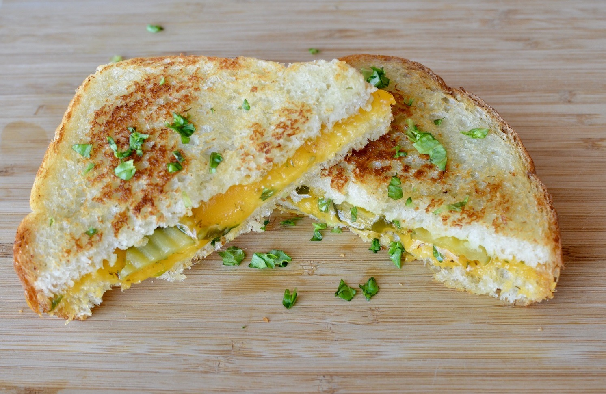

Grilled Cheese Recipe

This recipe will run you through the steps to create
the best grilled cheese you have never eaten!
Ingredients
- 1 tablespoon butter, softened
- 2 slices bread
- 2 slices sharp Cheddar cheese
- 1 tablespoon chopped parsley
- 1 teaspoon chopped basil
- 1 teaspoon oregano
- 1 teaspoon chopped fresh rosemary/li>
- 1 teaspoon chopped fresh dill
Steps
- Spread 1/2 tablespoon of butter on one side of each piece of bread.
Lie the slices of Cheddar on one of the slices of bread on the
unbuttered side. Sprinkle the parsley, basil, oregano, rosemary,
and dill on the other slice of bread on its unbuttered side.
Sandwich the two slices of bread together with the buttered sides
facing outwards.
- Heat a skillet over medium heat. When skillet is hot, gently lie
the sandwich in the skillet; cook on each side for 3 minutes until
cheese has melted.